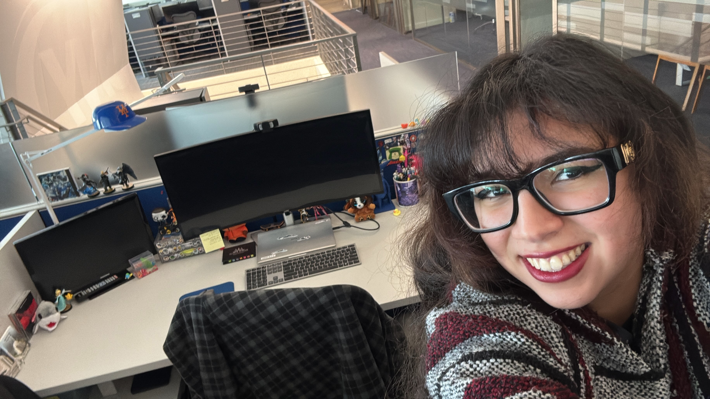

Work Experience
I currently work as an IT Analyst at SNY, where I gain hands-on experience with technical support, troubleshooting, and workplace technology. This role has helped me strengthen my communication, problem-solving, and technical thinking in a professional environment. Working in IT has also given me a better understanding of how important reliable systems and support are in day-to-day operations.

Interests
My interests include technology, machines, artificial intelligence, drawing, coloring, birds, airplanes, aviation history, and ornithology. I enjoy exploring how systems work, whether that means understanding computer technology, studying aircraft and their history, or learning more about intelligent tools and design. These interests reflect both my curiosity and my appreciation for structure, detail, and creativity.